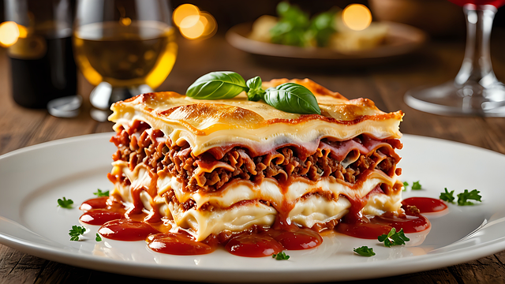

Lasagna

Description
Lasagna is a classic Italian dish made with layers of pasta, meat sauce,
and creamy béchamel sauce, baked to perfection. It's a hearty and comforting meal
that's perfect for gatherings.
Ingredients
- 9 lasagna noodles
- 500g ground beef
- 500g mozzarella
- tomato sauce
- béchamel sauce
- garlic & onion
- herbs
- tomatoes
Steps
- Cook Noodles: Cook lasagna noodles according to package instructions. Drain and set aside.
- Prepare Meat Sauce: In a large skillet, cook the ground beef, onion, and garlic until the meat is browned. Add the canned tomatoes, tomato paste, oregano, basil, salt, and pepper. Simmer for 20 minutes.
- Assemble Lasagna: Preheat the oven to 375°F (190°C). In a baking dish, spread a layer of meat sauce. Add a layer of lasagna noodles, followed by a layer of béchamel sauce, and mozzarella cheese. Repeat layers, ending with a layer of meat sauce and mozzarella cheese on top. Sprinkle with remaining Parmesan cheese.
- Bake: Cover with foil and bake for 25 minutes. Remove the foil and bake for an additional 25 minutes, until the top is golden and bubbly.
- Serve: Let the lasagna rest for 10 minutes before serving.